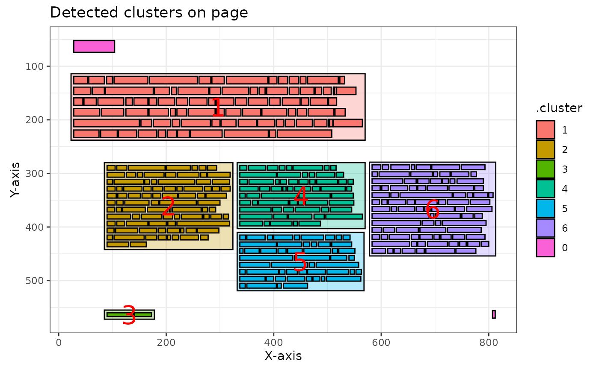

The pdftools
package is available for importing PDF files. However, this package does
not work optimally when importing PDF files with multiple columns and
text boxes. Since the pdftools::pdf_text() function from
the pdftools package processes text line by line, it often
fails to maintain the context of the text. As a result, the output may
contain sentences with unrelated fragments of text from different parts
of the page. Words that are not placed in the correct context are
unsuitable for text analysis.
However, the words grouped into clusters by this package using a Density-Based Spatial Clustering algorithm are likely to be contextually related and thus suitable for text analysis. This package directly utilizes the clustering algorithms implemented in the dbscan package.
Below is an example of how to import a PDF file using the pdftools
package, then detect columns with pdf_detect_clusters(),
plot the results with pdf_plot_clusters() andd finally
extract the text with pdf_extract_clusters() function.
For this example, the Quality Agenda 2024-2027 Mediacollege Amsterdam was used. More information about this report can be found at rijksoverheid.nl.
Loading Packages
library(pdftools)
#> Using poppler version 24.02.0
library(pdftextclusteR)Loading Data
Data is loaded using the pdftools::pdf_data() function.
The result is a list object with a tibble for each page containing the
data.
#' Reading a PDF document with `pdftools`
ka <- pdf_data("https://www.rijksoverheid.nl/binaries/rijksoverheid/documenten/rapporten/2024/06/10/kwaliteitsagenda-2024-2027-mediacollege-amsterdam/Kwaliteitsagenda+2024-2027+Mediacollege+Amsterdam.pdf")The metadata for the first 5 words on page 7 are, for example:
head(ka[[7]], 5)
#> width height x y space text
#> 1 76 22 28 52 FALSE Inleiding
#> 2 26 14 28 119 TRUE Waar
#> 3 29 14 56 119 TRUE liggen
#> 4 11 14 89 119 TRUE de
#> 5 63 14 103 119 TRUE belangrijksteDetecting text clusters
Clusters - usually columns and text boxes - are detected with the
pdf_detect_clusters() function.
ka_clusters <- ka[[7]] |>
pdf_detect_clusters()
#> Error in get(paste0(generic, ".", class), envir = get_method_env()) :
#> object 'type_sum.accel' not found
head(ka_clusters, 5)
#> # A tibble: 5 × 8
#> width height x y space text .cluster noise
#> <int> <int> <int> <int> <lgl> <chr> <fct> <lgl>
#> 1 76 22 28 52 FALSE Inleiding 0 TRUE
#> 2 26 14 28 119 TRUE Waar 1 FALSE
#> 3 29 14 56 119 TRUE liggen 1 FALSE
#> 4 11 14 89 119 TRUE de 1 FALSE
#> 5 63 14 103 119 TRUE belangrijkste 1 FALSEPlotting the Clusters
Using the pdf_plot_clusters() function, you can create a
visual representation of the detected clusters:
ka_clusters |>
pdf_plot_clusters()
If you compare this with the source PDF page, you can see that the package has clustered the text quite accurately in this case:

Extract text from clusters
The text of the detected clusters can be extracted with the
pdf_extract_clusters().
ka_clusters_text <- ka[[7]] |>
pdf_detect_clusters() |>
pdf_extract_clusters()The text from the first 5 clusters are:
head(ka_clusters_text, 5)
#> # A tibble: 5 × 3
#> .cluster word_count text
#> <fct> <int> <chr>
#> 1 0 2 "Inleiding\n 7\n"
#> 2 1 89 "Waar liggen de belangrijkste ontwikkelopgaven voor onze …
#> 3 2 89 "Met deze Kwaliteitsagenda 2024-2027 wil MA haar\n ambiti…
#> 4 3 3 "Kwaliteitsagenda 2024-2027\n"
#> 5 4 63 "We bouwen voort op de doelstellingen uit de\n Kwaliteits…Different algorithms
The dbscan package is used to detect the clusters. This package supports four different algorithms:
dbscanjpclustsNNclusthdbscan
By default, the dbscan algorithm is used because it
provides good results. However, as a user, you can also choose one of
the other algorithms. Below is an example of clustering the same page
using the sNNclust algorithm:
ka[[7]] |>
pdf_detect_clusters(algorithm = "sNNclust") |>
pdf_plot_clusters()